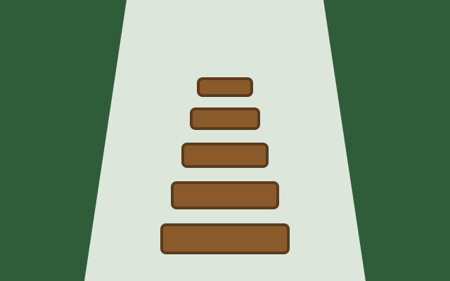

Ana · visitou em 12/10/2026
Descida tranquila, mas a volta cansa. Leve água de sobra.
Moderada Ida e volta



Descida por mata de araucárias até a base de uma queda-d'água, com volta pelo mesmo caminho. O trecho final tem degraus de pedra e pode ficar escorregadio depois da chuva.
Ana · visitou em 12/10/2026
Descida tranquila, mas a volta cansa. Leve água de sobra.